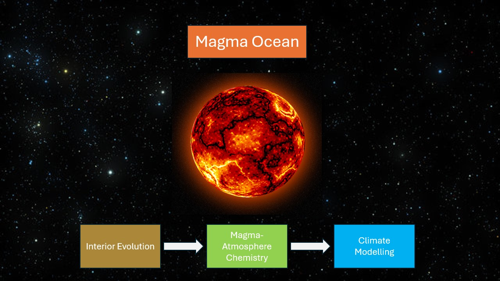

About Me
Hi, I’m Robb, a PhD student at the Institute of Astronomy, University of Cambridge. My research focuses on the atmospheres of hot rocky planets: worlds like Venus and Mercury that are too hot to sustain liquid water. Broadly, I’m interested in planetary habitability, and exploring how these extreme environments help us understand what factors can turn potentially habitable planets into uninhabitable ones.
Research
Ozone on Venus
My recent research has focused on ozone in the atmospheres of Venus-like planets. The presence of an ozone layer in Venus' mesosphere is a puzzle for planetary scientists: its origin remains unknown. If a similar ozone layer were found on other Venus-like worlds, it could complicate the use of ozone as a marker for identifying habitable Earth-like planets. I’ve been using atmospheric models to investigate the source of Venus' ozone and explore whether it might appear on other planets with similar conditions.

Magma Oceans on Sub-Neptunes
I am currently expanding my research on hot rocky exoplanets to include sub-Neptune worlds: those with radii between that of Earth and Neptune. Recent interest has grown around Hycean worlds, planets with vast liquid oceans and hydrogen-dominated atmospheres, and their potential to support life. However, distinguishing between Hycean worlds and sub-Neptunes with molten surfaces, or 'Magma Worlds,' remains a significant observational challenge.

Selected Publications
- Calder, R., Shorttle, O., Jordan, S., Rimmer, P., & Constantinou, T. (2025). Abiotic ozone in the observable atmospheres of Venus and Venus-like exoplanets. Monthly Notices of the Royal Astronomical Society, 540(3), 2432-2450. (ADS Link).
- Helling, C., Samra, D., Lewis, D., Calder, R., Hirst, G., Woitke, P., ... & Chubb, K. L. (2023). Exoplanet weather and climate regimes with clouds and thermal ionospheres-A model grid study in support of large-scale observational campaigns. Astronomy & Astrophysics, 671, A122 (ADS link).
CV
Contact
Address
Institute of Astronomy
Madingley Rd, Cambridge
CB3 0HA
E-mail
rdc49@cam.ac.uk